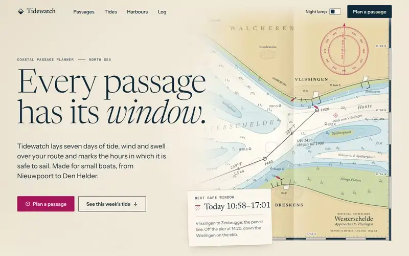

Subtle Subtiel · pale straw, about 220 °C
One clean, consistent design, and nothing that moves on its own. Every button, link and field answers when you point at it, press it or reach it with the keyboard. Things fade in and out.
- On Tidewatch
- The chart table: warm chart paper, deep sea ink, and chart magenta for the one main action and the safe window. Square corners, ruled like a tide table.
- Built with
- CSS only.
